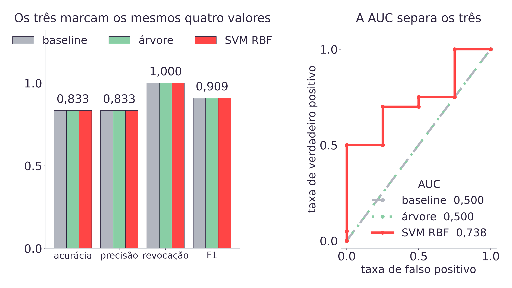
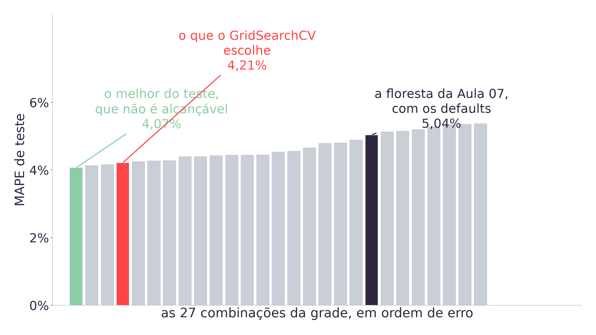
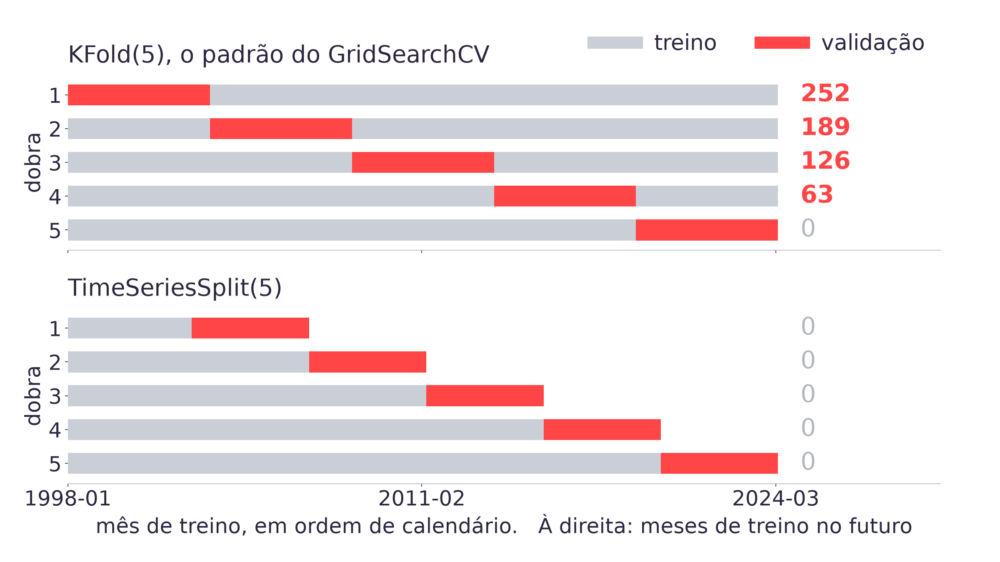
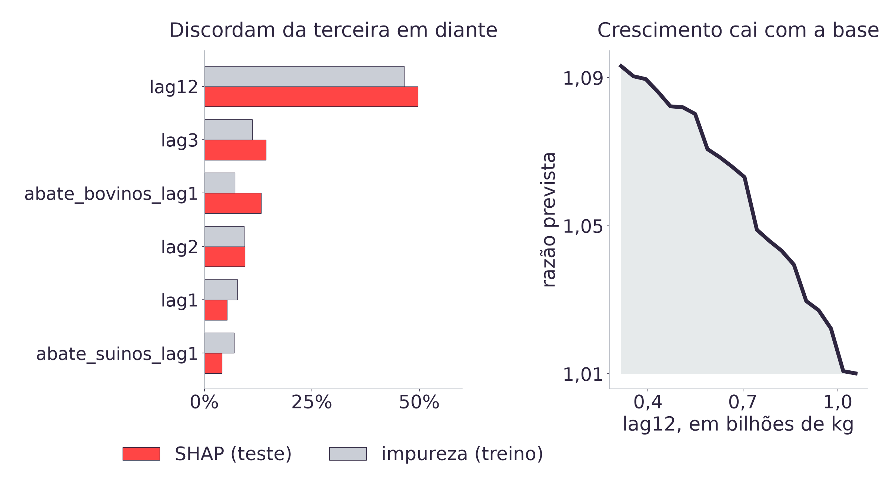

08h00 · 10h00
Autoestudo na Adalove, dez itens: hiperparâmetro, GridSearch e RandomSearch, validação cruzada, curva ROC e AUC, SHAP e explicabilidade [11].
10h00 · 10h15
Daily. O que fiz, o que vou fazer, impedimentos. Cada dupla relata se encontrou vazamento temporal no próprio pipeline na Aula 09.
10h15 · 12h00
Curva ROC e AUC (15 min), hiperparâmetros (30 min), validação cruzada temporal (30 min), explicabilidade (20 min) e a amarração com a ART.7 (10 min).
Os dez autoestudos de hoje fecham os dezenove da Semana 07: os outros nove foram lidos para a Aula 09 [11].
# o alvo binario da Aula 09
alvo = (base["abate_frangos"]
> base["lag12"]).astype(int)
alvo[:corte].mean() # 0.7810
alvo[corte:].mean() # 0.8333
# baseline, SVM RBF e arvore:
# acuracia 0.8333
# precisao 0.8333
# revocacao 1.0000
# F1 0.9091O alvo binário ao lado sai das próprias cinco séries do SIDRA [1]. A Aula 09 mediu cinco classificadores contra a baseline que prevê sempre a classe majoritária, e nenhum superou os 83,3% dela [12].
Três deles não só perderam: marcaram os quatro mesmos valores, até a quarta casa. A baseline não é um modelo, a árvore de entropia é, e as métricas não conseguem dizer isso [2].
Hoje o instrumento que desfaz esse empate entra em sala, e ele é autoestudo desta mesma semana [11].
As quatro métricas da Aula 09 têm algo em comum: todas são medidas depois de o modelo transformar o que calculou em uma decisão de sim ou não. O SVM calcula uma distância até a fronteira, a árvore calcula a proporção de positivos na folha, e as duas coisas viram um rótulo antes de a métrica existir [8].
A curva ROC não espera essa decisão. Ela varre todos os limiares possíveis e mede, em cada um, quanto se ganha em verdadeiro positivo e quanto se paga em falso positivo. A AUC resume a curva em um número, que tem leitura direta: a probabilidade de o modelo dar escore maior a um mês que cresceu do que a um mês que não cresceu [8].
Pergunta disparada: se dois modelos acertam a mesma quantidade de meses, o que ainda pode diferenciar um do outro?

A curva da árvore tem dois pontos, e é a diagonal: ela prevê a mesma classe nos 24 meses, então não há limiar intermediário para varrer [2].
| Modelo, sobre os 24 meses de teste | Acurácia | AUC | Pontos da curva |
|---|---|---|---|
| Baseline majoritária | 83,3% | 0,500 | 2 |
Árvore de entropia max_depth=3 | 83,3% | 0,500 | 2 |
| SVM RBF | 83,3% | 0,738 | 10 |
| SVM linear | 83,3% | 0,800 | 9 |
| Regressão logística | 79,2% | 0,800 | 7 |
| Naive Bayes gaussiano | 16,7% | 0,587 | 9 |
Ordenar por acurácia e ordenar por AUC dão listas diferentes [2]. O SVM RBF decide igual à baseline no limiar padrão, e por isso empata nas quatro métricas, mas ordena os meses melhor que o acaso: é um modelo com o limiar no lugar errado, o que tem conserto. A árvore não ordena nada, o que não tem conserto por limiar.
- Abrir a seção 2 do notebook da aula e rodar as duas células do bloco de classificação.
- Conferir que
roc_auc_scoreprecisa do escore (decision_functionoupredict_proba), e não do rótulo depredict: passar o rótulo devolve 0,500 para o SVM RBF. - Contar quantos pontos a curva de cada modelo tem, e explicar por que a árvore tem dois e o SVM RBF tem dez.
- Responder: se a LDC precisasse escolher os 5 meses de maior chance de alta, qual dos seis modelos da tabela ela deveria usar, e por quê?
# hiperparametro: escolhido
# antes, por quem modela
floresta = RandomForestRegressor(
n_estimators=300,
random_state=42)
# parametro: calculado pelo fit,
# a partir dos dados
floresta.fit(Xtr, razao_tr)
floresta.estimators_[0].tree_
# os cortes de cada no, que
# ninguem escreveu a maoUm parâmetro é o que o modelo aprende dos dados: o coeficiente de
cada feature na regressão, o valor de corte de cada nó da árvore. O fit é
o ato de calcular isso [5].
Um hiperparâmetro decide como o fit vai
acontecer: quantas árvores, até que profundidade, com quantas amostras por folha. O
fit não escolhe nenhum deles, e o scikit-learn preenche com um default
quando ninguém escolhe [5].
| Hiperparâmetro da floresta | Valor na Aula 07 | Quem escolheu |
|---|---|---|
n_estimators | 300 | A aula |
max_depth | None, cresce até a folha pura | O default |
min_samples_leaf | 1 | O default |
min_samples_split | 2 | O default |
max_features | 1.0, todas as colunas | O default |
Aceitar o default é uma escolha, e uma escolha que ninguém mediu. Com
max_depth=None e min_samples_leaf=1, cada árvore cresce até
separar uma linha por folha: quanto mais colunas a base tem, mais espaço isso dá para
decorar ruído [5].
| A mesma floresta de 300 árvores, alvo em razão | Features | MAPE de teste |
|---|---|---|
Sobre a base da Aula 07 (lag1, lag12, sen, cos) | 4 | 4,48% |
| Sobre a base que a Aula 09 deixou | 11 | 5,04% |
É o mesmo modelo, o mesmo corte por data e a mesma semente: só a largura da base mudou. As sete features que a Aula 09 acrescentou pioram a floresta que ninguém ajustou [2].
É a maldição de dimensionalidade daquela aula, agora medida no modelo do case e não numa distância média [12]. A pergunta do bloco é se a culpa é das features ou da floresta, e adivinhar não responde.
GRADE = {
"n_estimators": [100, 300, 600],
"max_depth": [None, 4, 8],
"min_samples_leaf": [1, 2, 5],
}
busca = GridSearchCV(
RandomForestRegressor(
random_state=42),
GRADE,
scoring="neg_mean_absolute"
"_percentage_error",
cv=TimeSeriesSplit(n_splits=5),
n_jobs=-1)
busca.fit(X[:corte], razao[:corte])3 x 3 x 3 combinações, cada uma treinada em 5 dobras: 135 treinos,
9 segundos com n_jobs=-1 [3].
O scoring mede MAPE sobre a razão, e isso dá o mesmo número do MAPE em
nível: o lag12 aparece no numerador e no denominador do erro relativo e se
cancela [2].
O cv é o assunto do próximo bloco. Por ora, basta saber que o default
seria outro.

A barra verde, em 4,07%, é o melhor do teste, e não é alcançável: escolher a combinação pela métrica de teste é escolher pela resposta [2][3].
| Saindo do default, uma mudança de cada vez | MAPE de teste | Ganho |
|---|---|---|
Default da Aula 07 (None / 1 / 300) | 5,04% | referência |
| Só podar a profundidade (4 / 1 / 300) | 4,45% | 0,59 |
Só exigir folha maior (None / 5 / 300) | 4,40% | 0,64 |
| As duas podas juntas (4 / 5 / 300) | 4,13% | 0,91 |
Dobrar as árvores, sem podar (None / 1 / 600) | 5,20% | piora 0,16 |
O ganho vem de podar a árvore, não de ter mais árvores [2]. Das três dimensões da grade, uma quase não muda o resultado, e um terço dos 135 treinos foi gasto nela.
| Busca | Treinos | Escolha | Validação | Teste |
|---|---|---|---|---|
GridSearchCV, 27 combinações | 135 | 4 / 5 / 600 | 5,87% | 4,21% |
RandomizedSearchCV, 9 sorteios | 45 | 4 / 5 / 600 | 5,87% | 4,21% |
Quando uma das dimensões da grade quase não muda o resultado, varrer todos os valores dela é desperdício: o sorteio cobre as dimensões que importam com a mesma densidade e gasta um terço do orçamento [6].
O argumento cresce com o tamanho da grade. Com três valores em cinco hiperparâmetros seriam 243 combinações e 1.215 treinos, e a fração que o sorteio precisa visitar para achar a mesma região não cresce junto [6].
- Rodar a grade da seção 3 do notebook sobre o próprio modelo, com dois ou três hiperparâmetros, e anotar a escolha e o MAPE de teste.
- Medir o modelo sem ajuste antes, para ter a referência: sem o número de partida, o ganho não existe.
- Repetir com
RandomizedSearchCVen_iterigual a um terço da grade. A escolha mudou? E o MAPE? - Anotar, para a ART.7: qual grade foi buscada, sob qual validação, e quais hiperparâmetros continuaram no default por decisão e não por esquecimento.
# sem cv, o GridSearchCV usa
# KFold(n_splits=5)
GridSearchCV(modelo, GRADE)
# corta por posicao na tabela,
# e a tabela esta em ordem
# de calendario
# o que a aula usa:
TimeSeriesSplit(n_splits=5)
# treino sempre antes da
# validacao, janela crescenteO KFold corta os 315 meses em cinco blocos, usa um como validação e os
outros quatro como treino, cinco vezes [5].
Em dado tabular sem ordem, isso é correto. Aqui, a linha 300 é março de 2023 e a linha 10 é novembro de 1998, e quatro dos cinco blocos de treino contêm meses posteriores ao bloco de validação [2].
A Aula 05 fez a versão manual disso, repetindo janelas à mão; a Aula 09 usou o corte
único por data. O TimeSeriesSplit é as duas coisas [12].

Na primeira dobra do KFold, o modelo estuda de 2003 a 2024 e é cobrado sobre
1998 a 2003 [2].
| Dobra | KFold: treino, validação | No futuro | TimeSeriesSplit: treino | No futuro |
|---|---|---|---|---|
| 1 | 252, 1998-01 a 2003-03 | 252 | 55, valida 2002-08 a 2006-11 | 0 |
| 2 | 252, 2003-04 a 2008-06 | 189 | 107, valida até 2011-03 | 0 |
| 3 | 252, 2008-07 a 2013-09 | 126 | 159, valida até 2015-07 | 0 |
| 4 | 252, 2013-10 a 2018-12 | 63 | 211, valida até 2019-11 | 0 |
| 5 | 252, 2019-01 a 2024-03 | 0 | 263, valida até 2024-03 | 0 |
O TimeSeriesSplit paga um preço por isso: as primeiras dobras treinam com 55
meses, contra os 252 fixos do KFold. Em troca, nenhuma das cinco estimativas
vem de um modelo que estudou o futuro [2].
| Base | Validador | Escolha | Estimativa | Teste |
|---|---|---|---|---|
| 11 features | KFold | 4 / 5 / 300 | 6,03% | 4,13% |
| 11 features | TimeSeriesSplit | 4 / 5 / 600 | 5,87% | 4,21% |
| 4 features | KFold | 4 / 5 / 300 | 5,66% | 3,99% |
| 4 features | TimeSeriesSplit | 4 / 5 / 100 | 5,76% | 3,95% |
Com onze features o KFold termina à frente no teste; com quatro, atrás. A
vantagem troca de sinal conforme o conjunto de features, e as duas
diferenças são menores que um décimo de ponto percentual: isso é ruído de um teste de 24
meses, não evidência sobre o validador [2][3].
O que o KFold entrega aqui não é um resultado pior: é uma
estimativa que não se pode auditar. Quando ele diz que o modelo erra 6,03%
na validação, esse número saiu de um procedimento em que o modelo estudou 2024 para ser
cobrado sobre 1998. Nenhum modelo em produção terá esse privilégio [2].
A estimativa do TimeSeriesSplit responde à pergunta que a LDC vai fazer, que
é como o modelo se comporta sobre meses que ele nunca viu e que vieram depois [3].
É o mesmo raciocínio da Aula 09: lá, a regressão sobre a razão não melhorava com o sorteio aleatório, e mesmo assim o corte por data virou regra, porque regra de protocolo vale antes de saber quem vai ganhar [12]. Escolher o validador depois de ver o resultado é a mesma armadilha de escolher o modelo pela métrica de teste.
- Trocar o
cvdo próprioGridSearchCVpeloTimeSeriesSplit(n_splits=5)e comparar a escolha e a estimativa de validação com as do default. - Percorrer
cv.split(Xtr)e imprimir, por dobra, o primeiro e o último mês de treino e de validação. Confirmar que o treino termina antes de a validação começar. - Contar, em cada dobra do
KFold, quantos meses de treino são posteriores ao início da validação, e conferir o 252 de 252 da primeira [2]. - Responder: a estimativa de validação do próprio modelo ficou mais perto ou mais longe do MAPE de teste depois da troca? E isso é argumento a favor de qual validador?
melhor = busca.best_estimator_
# vem de graca com a floresta,
# medida sobre o TREINO
melhor.feature_importances_
# medida por linha, sobre os
# 24 meses de TESTE
import shap
valores = (shap.TreeExplainer(melhor)
.shap_values(X[corte:]))
np.abs(valores).mean(axis=0)A importância por impureza soma, por feature, quanto cada corte que a usou reduziu o erro dentro do treino. Ela tende a inflar features com muitos valores distintos, porque elas oferecem mais cortes possíveis [5].
O SHAP responde outra coisa: para cada previsão, quanto cada feature empurrou o resultado em relação à previsão média. É leitura por linha, aqui medida sobre os 24 meses de teste, que são as previsões que o modelo vai de fato entregar [7].

As duas leituras concordam no que mais importa e se separam no resto [2].
| Posição | Por SHAP, sobre o teste | Por impureza, sobre o treino |
|---|---|---|
| 1 | lag12 | lag12 |
| 2 | lag3 | lag3 |
| 3 | abate_bovinos_lag1 | lag2 |
| 4 | lag2 | lag1 |
| 5 | lag1 | producao_ovos_lag1 |
| 6 | abate_suinos_lag1 | abate_bovinos_lag1 |
Nenhuma das duas está errada: elas medem coisas diferentes, sobre conjuntos diferentes [7]. Mas uma dupla que relatar "a feature mais influente do nosso modelo" sem dizer qual leitura usou dá uma resposta que ninguém consegue conferir, e a ART.7 pede resposta conferível [10].
O partial dependence segura todas as outras features e pergunta o que acontece com a
previsão quando uma delas varia. Para o lag12, a curva é decrescente: nos meses
de base pequena a floresta prevê cerca de 9,3% de crescimento sobre o ano
anterior, e nos de base grande, cerca de 1,0% [2][9].
Isso se lê em uma frase para a LDC, e é uma frase que dá para discutir com quem entende do negócio: a produção de frango no Brasil cresceu rápido enquanto a base era pequena e desacelerou conforme ela cresceu, e a floresta aprendeu esse formato sem que ninguém a tenha programado para isso.
É o tipo de explicação que o TAPI pediu, e é o oposto de dizer que o modelo tem 600 árvores [4].
- Rodar
shap.TreeExplainersobre o modelo ajustado da própria dupla e listar as features por SHAP médio absoluto no conjunto de teste. - Listar as mesmas features por
feature_importances_e marcar em que posição as duas ordens se separam. - Gerar o partial dependence da feature mais influente e escrever uma frase que descreva o formato da curva em linguagem de negócio, sem citar nome de algoritmo.
- Levar essa frase para o daily da Aula 11: ela é o ponto de partida da comparação com o PyCaret [12].
A árvore de entropia tem 83,3% de acurácia e AUC 0,500. O que esses dois números, juntos, dizem sobre ela?
Com as onze features, o KFold escolheu um modelo que
erra 4,13% no teste, contra 4,21% do TimeSeriesSplit. O que fazer com esse
resultado?
| O default responde | O que ele esconde | O que a comparação exige |
|---|---|---|
| Acurácia de 83,3% | Três modelos empatados, um deles a baseline | AUC no alvo categórico, baseline no de regressão |
| Hiperparâmetro não escolhido | 0,83 ponto de MAPE, de 5,04% para 4,21% | Grade declarada, e default declarado como escolha |
KFold como cv | 252 meses de treino no futuro na dobra 1 | Validação cruzada que respeita o tempo |
feature_importances_ | Ordem diferente do SHAP da terceira em diante | Leitura de importância declarada junto do resultado |
ART.7 Comparação de modelos, peso 8, na Sprint 4, com planning em 14/09
e review em 25/09 [10]. O modelo que sai daqui, floresta com max_depth=4,
min_samples_leaf=5 e n_estimators=600 a 4,21%, é o candidato
ajustado à mão. Na Aula 11 ele vira o termo de comparação contra o PyCaret.
- IBGE. Pesquisa Trimestral do Abate de Animais e da produção de ovos e leite: tabelas 1092, 1093, 1094, 7524 e 1086 do SIDRA.
- As treze conclusões da aula, em
tools/tests/test_ajuste_aula10.py. - Escopo, base de ajuste e os 105 minutos em
docs/adrs/ADR-013. - Material de apoio da Aula 10.
- Pedregosa, F. et al. Scikit-learn. JMLR, 2011.
- Bergstra, J.; Bengio, Y. Random Search for Hyper-Parameter Optimization. JMLR, 13, 2012.
- Lundberg, S. M.; Lee, S.-I. A Unified Approach to Interpreting Model Predictions. NeurIPS, 2017.
- Fawcett, T. An Introduction to ROC Analysis. Pattern Recognition Letters, 27(8), 2006.
- Friedman, J. H. Greedy Function Approximation. Annals of Statistics, 29(5), 2001, seção 8.
PLANO_DE_ENSINO.md, seções 4 e 6: peso 8 da ART.7.- Autoestudos da Semana 07 em referencias/aula10.html.
- Aula 09, de onde vem o resgate, e o notebook da Aula 07, de onde vem o 4,48%.